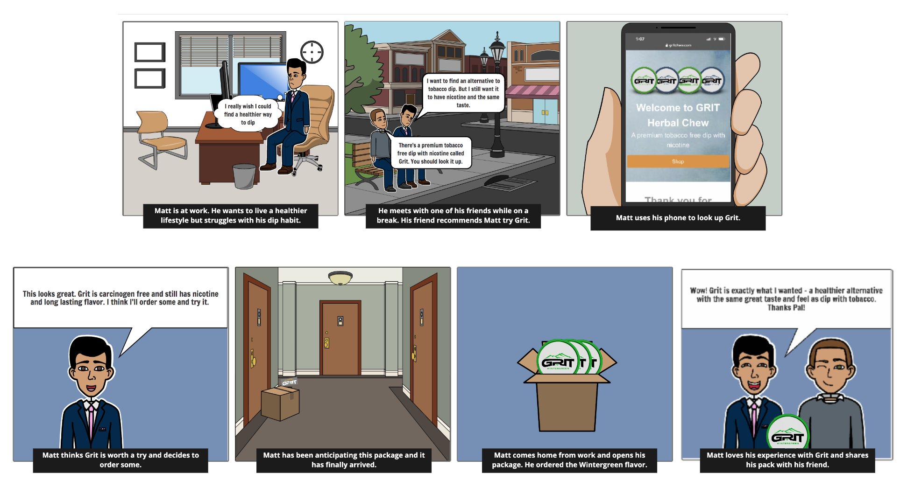
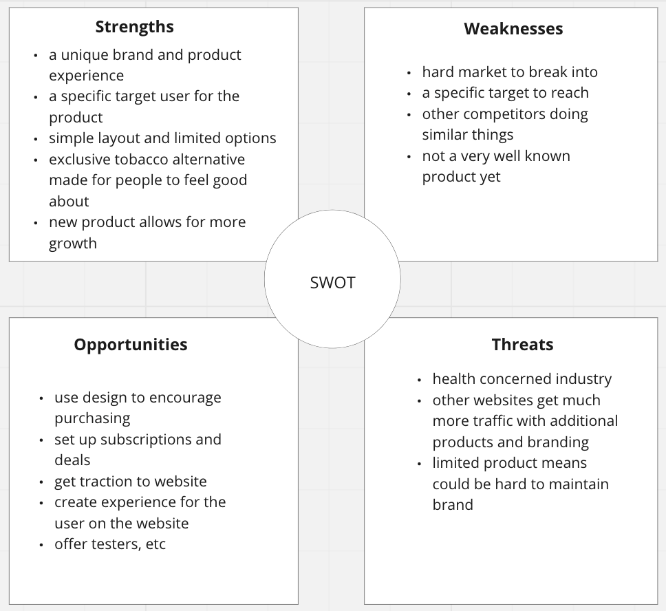
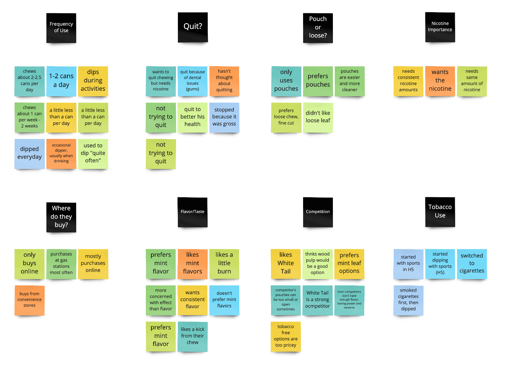
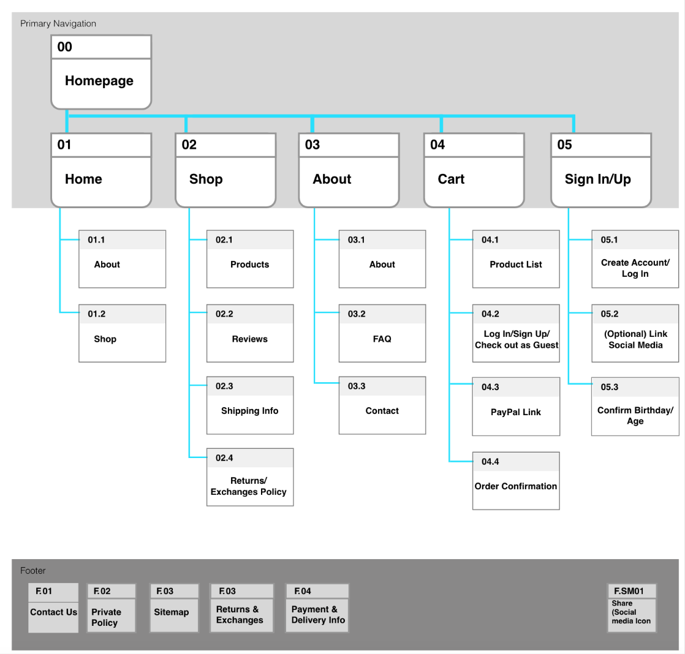
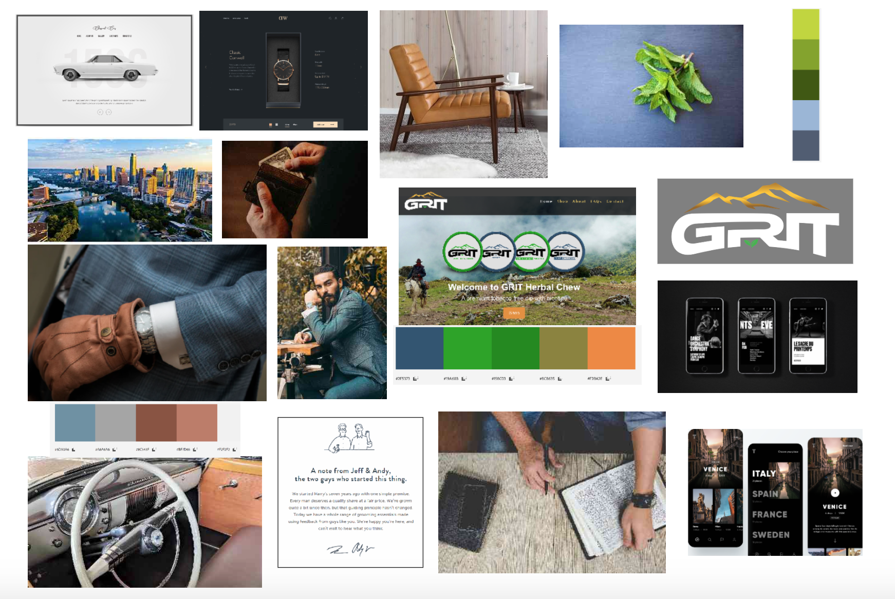
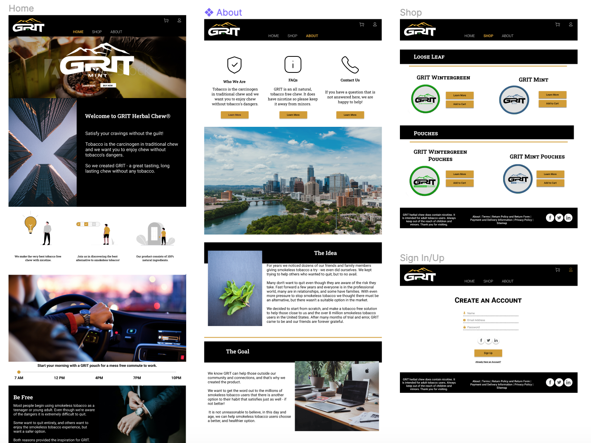
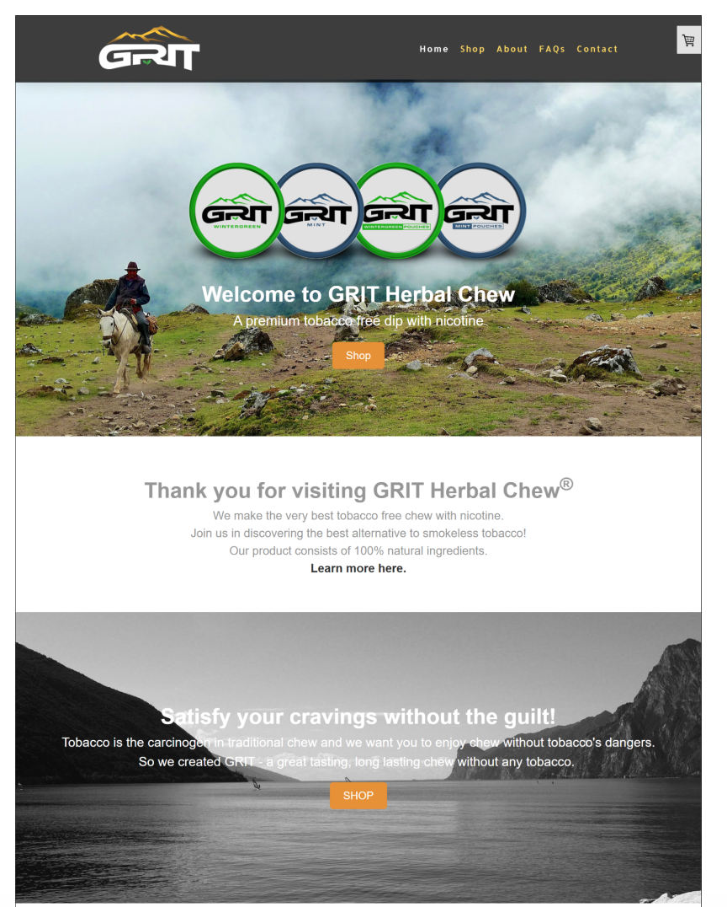

Grit Chew - A high quality modern toboccoless dip company
Step 1
Our goal, was to redesign a high quality chewing tobacco product within 3 weeks time and to the best of our ability. We were up for the challenge.
Step 2
Understanding the Project
We were given one representative for the company Grit Chew and only a limited amount of previous information, research, and design characteristics, the rest would be up to us.
Our Tasks
Step 3
How To Start
User Research, Empathy Map and User Persona
- With the supplies and original research material we were given, we dove straight into research.
- We started with creating a proto-persona and empathy map to understand our users better and create a solid base understanding of who they are.
Step 4
Creating the Story
Storyboard
Our storyboard shows the emotions of our user persona in visuals in order to create a greater sense of the purpose of this profect and value of our design.
Step 5
Testing and Heuristic Analysis
We created a survey to send out to users that fell into our user demographics. We used, social media, including Reddit to reach people and got a large amount of responses.
We also did our own research interviews with personal connections that we had that chewed tobacco to understand what they are looking for in a product.
SWOT Analysis
The swot analysis helped us understand competitors within the market and various opportunities or weaknesses within it.
Affinity Diagram
We used this affinity diagram technique to categorize and analyze our interview and survey notes, into opportunities and information.
Step 5
Information Architecture and Moodboard
The next step for our team was to finalize the informational architecture and navigation of the site, as well as a moodboard for ideation and brainstorming.
IA/Site Map
After a card sorting technique we created a site map, which was fairly simple since there was only a few products being sold on the site, and most of the other information needed was all within the About page.
Moodboard/Brainstorming
We then needed to get some color and life to the site. With all of our previous research and information about the tobacco market, our investors, company owners, and users, we each created a moodboard with inspirational ideas and images to give us colorful direction.
Step 6
Sketching and Wireframing
We created sketches and low fidelity wireframes to get our bones in place before adding any fluff.
Lofi Desktop Wireframes
Lofi Mobile Wireframes
Step 7
Midfi and Iterations
We created a mid fidelity prototype with some of the color and features we were hoping to include. We then used this version to do testing on to see what the issues may be and where we could improve before finishing the product.
Mid Fidelity Wireframes
Step 8, 9 and 10
Testing, Iterations and Final Prototype
We did user testing to our lofi prototyping and added final iterations. This is our final redesign of Grit Chew.
High Fidelity
From This
To This and More

Tools and Final Thoughts
Tools
Figma, Miro, Adobe XD, Adobe Photoshop, Slack, Zoom, Google Slides, Google Sheets, Google Forms, unDraw
Final Thoughts
To Conclude this case study, we not only learned a lot about ux design and the research process but we found ourselves in the depths of the tobacco market, which I believe none of us thought would get to. It was one of the most enriching experiences to understand a whole new market and base demographic while at the same time redesigning for our Stakholders. While there are many more iterations that could continue to grow the website, our team came in 3rd place out of about 10 teams, rewarding our stakeholds with additional recources to continue the world of Grit Chew. I am proud to have worked on this team and excited to see the product grow.